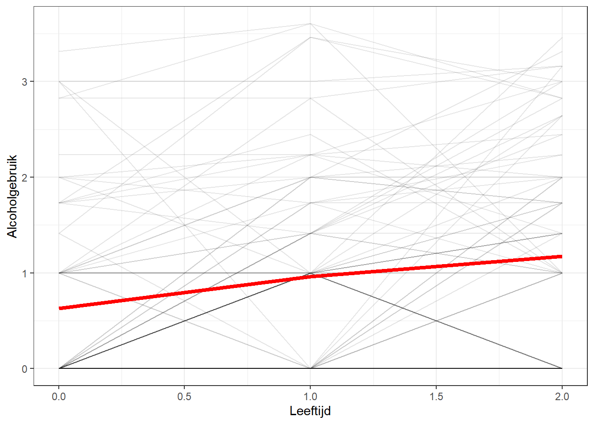
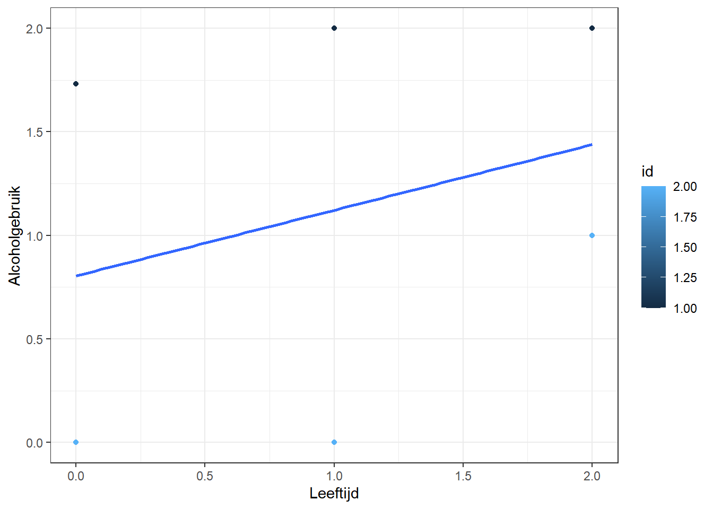

Dit is een blog over Latente Groei Modeling van longitudinale data van alcoholgebruik van jongeren
analyse
Author
Alexander Cernat, bewerking Harrie Jonkman
Published
January 3, 2022
Schatten en visualiseren van verandering in de tijd met behulp van Latente Groeimodellen met R
Longitudinale gegevens zijn zo interessant omdat ze ons in staat stellen te kijken naar verandering in de tijd, je krijgt er een beter inzicht mee in causale verbanden en je kunt gebeurtenissen en hun timing ermee verklaren. Om gebruik te maken van dit soort gegevens, moeten we verder gaan dan de klassieke statistische methoden, zoals OLS regressie en ANOVA. Dan moeten we gebruik maken van modellen die de extra complexiteit van de gegevens ook echt aan kunnen. Alexandru Cernat schreef ook hier een duidelijke blog over dat ik heb bewerkt en waarbij ik ook de alcoholdata van Singer en Willet heb gebruik.
Een populair model voor de analyse van longitudinale gegevens is het Latente Groei Model (Latent Growth Model, LGM). Hiermee kan de verandering in de tijd worden geschat, terwijl rekening wordt gehouden met de hiërarchische aard van de gegevens (meerdere punten in de tijd die genest zijn binnen individuen). Het is vergelijkbaar met het multilevel model van verandering, maar hier wordt de schatting gedaan met behulp van het Structural Equation Modeling (SEM)-raamwerk. Dit raamwerk maakt gebruik van gegevens in het brede formaat (elke rij is een individu en de diverse metingen in de tijd verschijnen als verschillende kolommen).
Meer in het bijzonder kan het LGM helpen
- te begrijpen hoe verandering in de tijd verloopt;
- verandering verklaren met behulp van tijdvariërende en tijdconstante voorspellers;
- variantie ontleden in tussen- en binnenvariatie;
- en het model kan makkelijk worden uitgebreid naar andere analysemodellen.
Hieronder volgt een korte inleiding op LGM, hoe de uitkomsten zijn te schatten en hoe de schattingen van verandering zijn te visualiseren.
Laten we eerst de benodigde pakketten eens laden. We zullen tidyverse gebruiken voor het opschonen en visualiseren van de gegevens en lavaan voor het uitvoeren van de LGM in R.
library(tidyverse)
Warning: package 'tidyverse' was built under R version 4.1.3
v ggplot2 3.3.6 v purrr 0.3.4
v tibble 3.1.7 v dplyr 1.0.9
v tidyr 1.2.0 v stringr 1.4.1
v readr 2.1.2 v forcats 0.5.1
Warning: package 'ggplot2' was built under R version 4.1.3
Warning: package 'tibble' was built under R version 4.1.3
Warning: package 'tidyr' was built under R version 4.1.3
Warning: package 'readr' was built under R version 4.1.3
Warning: package 'dplyr' was built under R version 4.1.3
Warning: package 'stringr' was built under R version 4.1.3
-- Conflicts ------------------------------------------ tidyverse_conflicts() --
x dplyr::filter() masks stats::filter()
x dplyr::lag() masks stats::lag()
library(lavaan)
Warning: package 'lavaan' was built under R version 4.1.3
This is lavaan 0.6-11
lavaan is FREE software! Please report any bugs.
Laten we, voordat we aan de LGM beginnen, eens kijken naar het soort gegevens dat we zouden willen analyseren. Hier gebruik ik alcoholdata van jongeren met de drie metingen van Singer en Willet voor die vrij toegankelijk zijn op internet.
Stel dat we geïnteresseerd zijn in hoe alcoholscore in de tijd verandert. Om het preciezer te formuleren willen laten zien hoe alcoholgebruik onder jongeren gemiddeld verandert, en tegelijk willen we een onderscheid maken tussen variatie, hoe jongeren veranderen ten opzichte van anderen. Maar tegelijk willen we ook iets zeggen over binnenvariatie en hoe jongeren veranderen ten opzichte van hun eigen gemiddelde/trend.
Laten we eerst eens kijken hoe de gegevens eruit zien. Laten we eens kijken naar de brede gegevens, dit zijn de gegevens die gebruikt worden om LGM uit te voeren en laten we ook maar meteen het lange bestand bekijken:
We beginnen met het lange formaat, waar elke rij een combinatie is van individu en tijd. Dit is het formaat dat we nodig hebben voor visualisatie met ggplot2, en voor andere modellen (zoals het multilevel model voor verandering).
Om een idee te krijgen van wat we gaan modelleren, maken we een eenvoudige grafiek met de gemiddelde verandering in de tijd en de trend voor elk individu.
ggplot(alcohol1, aes(age_14, alcuse, group = id)) +geom_line(alpha =0.1) +# add individual line with transparencystat_summary( # add average lineaes(group =1),fun = mean,geom ="line",size =1.5,color ="red" ) +theme_bw() +# nice themelabs(x ="Leeftijd", y ="Alcoholgebruik") # nice labels

We zien hier een gemiddelde verandering in de tijd. Tegelijk willen we ook zichtbaar maken wat variatie is in de manier waarop mensen veranderen. LGM is in staat beide tegelijk te schatten!
Wat is Latente Groei Modellering?
Nu we een idee hebben van de gegevens en het soort onderzoeksvragen dat we zouden kunnen hebben, kunnen we overgaan tot de uitvoering van LGM. De formule voor het LGM is eigenlijk zeer gelijkaardig aan die voor het multilevel model van verandering:
\(Y_j\) is de variabele van belang (alcuse, alchoholgebruik van jongeren) die verandert in tijd, j.
\(\alpha_0\) is de gemiddelde waarde bij het begin van de gegevensverzameling (het beginpunt van de rode lijn hierboven).
\(\alpha_1*\gamma_j\) is de gemiddelde snelheid van verandering in de tijd (de helling van de rode lijn in de grafiek hierboven). Hier is \(gamma_j\) gewoon een maat voor de tijd.
\(\zeta_{00}\) is de tussenvariatie aan het begin van de gegevens. Het vat samen hoe verschillend de individuele startpunten zijn ten opzichte van het gemiddelde startpunt.
\(\zeta_{11}\gamma_j\) is de tussen variatie in de snelheid van verandering. Samenvattend hoe verschillend de individuele veranderingsversnellingen zijn ten opzichte van de gemiddelde verandering (rode lijn hierboven).
De \(\epsilon_j\) is de binnenvariatie of hoeveel individuen variëren rond hun voorspelde trend. Met de onderstaande grafiek kunnen we een beter idee krijgen van de verschillende variatiebronnen:
alcohol1 %>%filter(id %in%1:2) %>%# selecteer twee individuenggplot(aes(age_14, alcuse, color = id)) +geom_point() +# punten voor VeerkrachtTotaalgeom_smooth(method = lm, se =FALSE) +# liniaire lijntheme_bw() +# mooi themalabs(x ="Leeftijd", y ="Alcoholgebruik") # nice labels
`geom_smooth()` using formula 'y ~ x'

De interne variatie wordt weergegeven door de afstand tussen de lijn en de punten. Dit wordt voor elk individu afzonderlijk gedaan (door de kleur in de grafiek). De tussenvariatie verwijst naar hoe verschillend de lijnen zijn. Dit kan zowel het beginpunt als de helling zijn.
Omdat deze techniek met brede databestanden werkt, zetten we de data over van lang naar wijd
i =~ 1*Meting.0 + 1*Meting.1 + 1*Meting.2
s =~ 0*Meting.0 + 1*Meting.1 + 2*Meting.2
i ~~ s
Structural Equation Modeling heeft zijn eigen manier om deze statistische relaties weer te geven. Hieronder is afgebeeld hoe we ons het hierboven beschreven model zouden moeten voorstellen:
Fig.1, LGM grafisch verbeeld
In de figuur worden de latente variabelen voorgesteld door cirkels (de twee \(\eta\)-variabelen, intercept en slope), terwijl de waargenomen variabelen worden voorgesteld door vierkanten (de vier y-variabelen). Wij krijgen ook de residuen (kleine cirkels die \(\epsilon\) voorstellen). Voor de latente variabelen hebben wij gemiddelden (\(\alpha\)) en varianties (\(\zeta\)). Deze zijn geschat en hebben de hierboven beschreven interpretatie. De pijlen tussen de latente en de geobserveerde variabelen (die gewoon regressiehellingen of ladingen zijn) liggen van tevoren vast. Voor de latente interceptvariabele (weergegeven door \(\eta_0\)) zijn de ladingen vastgesteld op 1 (daarom is er in bovenstaande formule niets vermenigvuldigd met \(\alpha_0\) en \(\eta_{00}\)). De ladingen voor de hellende latente variabele (weergegeven door \(\eta_1\)) worden vastgesteld naar gelang van de verandering in tijd (\(\gamma_j\) in bovenstaande formule). In dit geval gaat het eenvoudig van 0 naar 2. Er is ook een correlatie tussen het beginpunt en de verandering in tijd, weergegeven door de dubbele pijl \(\zeta_{01}\). Dit wordt niet vaak geïnterpreteerd, maar het geeft je in feite een idee of mensen convergeren (of meer op elkaar gaan lijken in de tijd) of divergeren (meer van elkaar gaan verschillen).
Nu het technische deel duidelijk is gemaakt, kunnen we wat modelleren en meer grafieken maken!
# first LGM model <-'i =~ 1*age_14 + 1*age_15 + 1*age_16 s =~ 0*age_14 + 1*age_15 + 2*age_16 'fit1 <-growth(model, data = alcwide)summary(fit1, standardized =TRUE)
lavaan 0.6-11 ended normally after 22 iterations
Estimator ML
Optimization method NLMINB
Number of model parameters 8
Number of observations 82
Model Test User Model:
Test statistic 0.636
Degrees of freedom 1
P-value (Chi-square) 0.425
Parameter Estimates:
Standard errors Standard
Information Expected
Information saturated (h1) model Structured
Latent Variables:
Estimate Std.Err z-value P(>|z|) Std.lv Std.all
i =~
age_14 1.000 0.898 0.963
age_15 1.000 0.898 0.862
age_16 1.000 0.898 0.796
s =~
age_14 0.000 0.000 0.000
age_15 1.000 0.484 0.464
age_16 2.000 0.967 0.857
Covariances:
Estimate Std.Err z-value P(>|z|) Std.lv Std.all
i ~~
s -0.187 0.102 -1.841 0.066 -0.431 -0.431
Intercepts:
Estimate Std.Err z-value P(>|z|) Std.lv Std.all
.age_14 0.000 0.000 0.000
.age_15 0.000 0.000 0.000
.age_16 0.000 0.000 0.000
i 0.634 0.103 6.163 0.000 0.706 0.706
s 0.277 0.062 4.481 0.000 0.573 0.573
Variances:
Estimate Std.Err z-value P(>|z|) Std.lv Std.all
.age_14 0.064 0.147 0.436 0.663 0.064 0.073
.age_15 0.420 0.094 4.463 0.000 0.420 0.387
.age_16 0.280 0.180 1.556 0.120 0.280 0.220
i 0.807 0.193 4.177 0.000 1.000 1.000
s 0.234 0.083 2.803 0.005 1.000 1.000
Er zijn in principe zes soorten coëfficiënten die hier interessant zijn:
intercept i: de waarde 0.634 staat voor de gemiddelde verwachte alcoholgebruik aan het begin van het onderzoek voor alle respondenten wanneer ze 14 jaar zijn.
slope s: de waarde 0.277 vertegenwoordigt de gemiddelde verandering voor alle respondenten. Dus bij elke meting stijgt het gebruik van alcohol met met 0.277.
variantie i: de waarde 0.807 vertegenwoordigt de tussenvariatie aan het begin van het onderzoek. Dus hoe verschillend zijn mensen vergeleken met het gemiddelde.
variantie s: de waarde 0.234 staat voor de tussenvariatie in de veranderingssnelheid. Het laat zien hoe verschillend veranderingshellingen zijn voor verschillende mensen.
Variantie alcoholgebruik: de waarden tussen 0.064 en 0.420 geven de interne variatie op elk punt in de tijd weer.
correlatie tussen i en s: de waarde -0.187 laat zien dat het alcohol niet in de tijd convergeert (althans niet significant).
Hoe kunnen we de verandering visualiseren?
Een goede manier om te begrijpen wat je modelleert, is de voorspelde scores van het model visualiseren. We zullen het predict() commando gebruiken om een nieuw object op te slaan met de voorspelde scores op individueel niveau voor het intercept en de helling.
# voorspellen van twee latente variabelenpred_lgm <-predict(fit1)
Dit heeft de voorspelde score voor het intercept en de helling voor elk individu:
head(pred_lgm)
i s
[1,] 1.67339200 0.15061147
[2,] 0.01577357 0.41987762
[3,] 1.03717373 0.89157072
[4,] 0.15472328 0.80763226
[5,] 0.01182452 0.09588422
[6,] 2.85697940 0.05794456
Deze zijn gebaseerd op ons model. Wij zouden dus bijvoorbeeld het gemiddelde van deze variabelen kunnen schatten en dat gemiddelde voor intercept en slope zou achtereenvolgens dezelfde resultaten moeten geven als hierboven:
# gemiddelde van het intercept (eerste kolom)mean(pred_lgm[, 1])
Om de resultaten te plotten, willen wij deze gegevens (intercept (\(\zeta_0\)) en helling (\(\zeta_1\))) omzetten in verwachte scores bij elke meting (\(\gamma_j\)j). We kunnen deze transformatie doen op basis van het padmodel dat we hierboven hebben gezien:
\(Y_1=\eta_0 + \eta_1\gamma_j\)
Voor de eerste meting (time=0) is de verwachte waarde dus alleen het intercept (\(\eta_0\)) omdat \(\gamma_j\) gelijk is aan 0. Voor de meting zou de verwachte waarde het intercept (\(\eta_0\)) en de helling (\(\eta_1\)) zijn. Voor meting drie zou het intercept + 2*helling zijn, enzovoort.
In R zouden we al deze metingen met de hand kunnen berekenen of we zouden het automatisch kunnen doen met behulp van functioneel programmeren. Op basis van de bovenstaande formule kunnen we een tegenhanger in R maken:
pred_lgm[, 1] + x*pred_lgm[, 2]
Voor de eerste meting (alc_14=0) krijgen we deze scores
waarbij x onze codering van tijd voorstelt (of \(\gamma_j\)). We kunnen deze functie meerdere keren toepassen met het map() commando. De onderstaande syntaxis past deze formule toe voor de getallen 0, 1, 2 (onze codering van meting (variabele alc_14).
map(0:2, # loop over, in ons geval 1,2,3function(x) pred_lgm[, 1] + x * pred_lgm[, 2]) # formule die gebruikt wordt